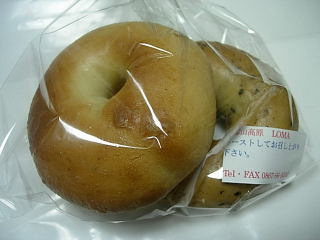
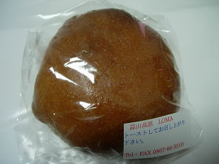

自家製酵母パンの「LOMA]
2009/06/07
蒜山高原のパン屋さんに行きました。大きい道沿いにあるので、初めてでも行き易かったです。
お店でパンを買った時に、このお店のパンは自家製酵母パンのため、そのまま食べると固いので、アルミホイルをしてオーブントースターで焼いてから食べて下さいと説明がありました。
出来たてのパンだったら直ぐに食べれますが、置いてあるパンは温めてもらわないといけないので、さっと行って近くの公園や広場でさっと食べるってわけにはいかないみたいです。
ちょっと小さいベーグルのセットを買って、帰ってから温めていただきました。アツアツなので柔らかく、とても軽い味でした。なんとなく蒸しパンのような味がする気がしました。

こっちはクリームパンです。見た目がちょっと変わってますね。

お値段がちょっと高いですが、きっとそれくらい手間もかかってるんじゃないかと思いました。